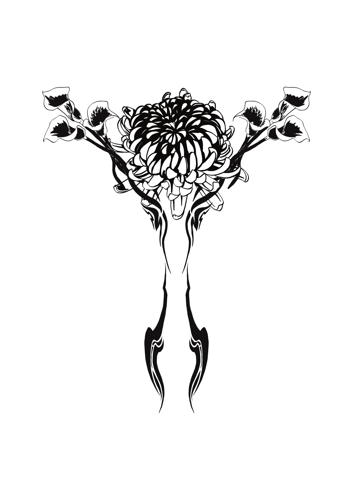
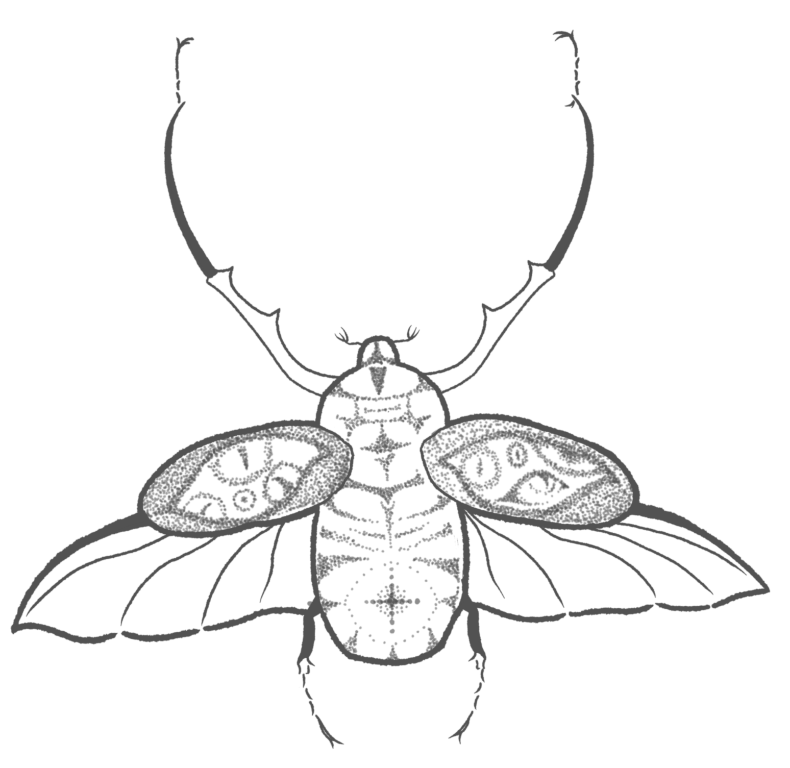
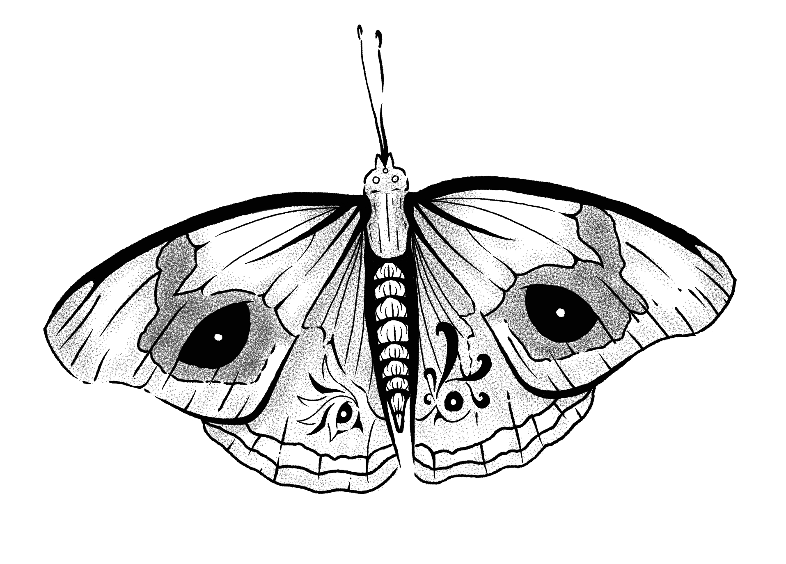
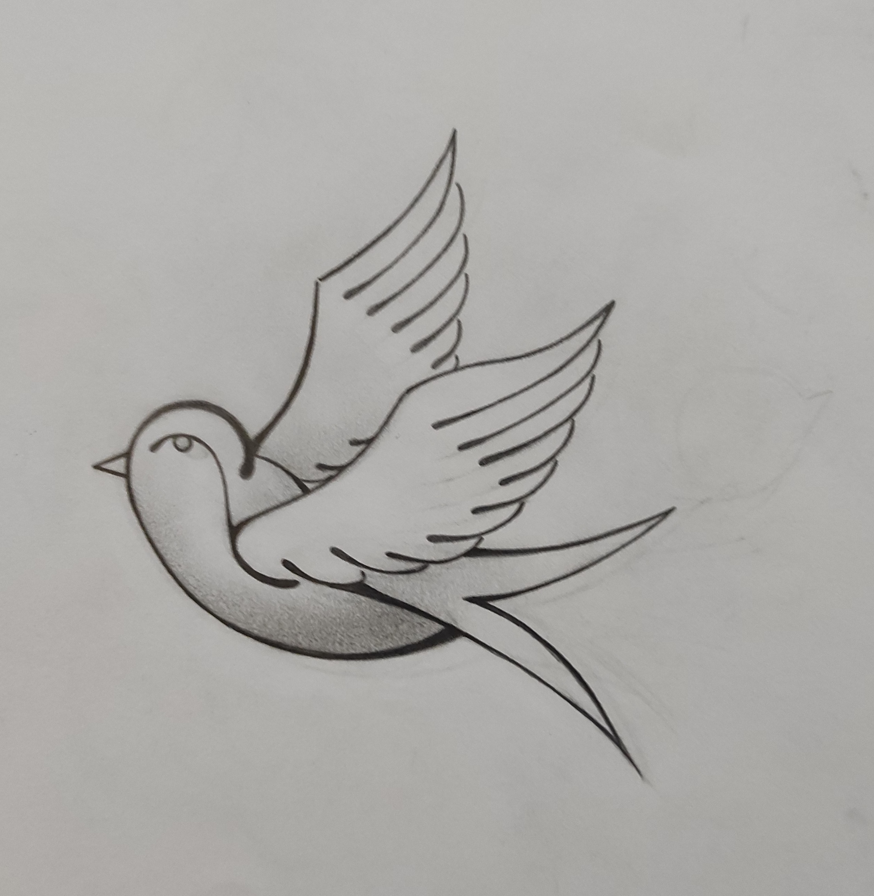
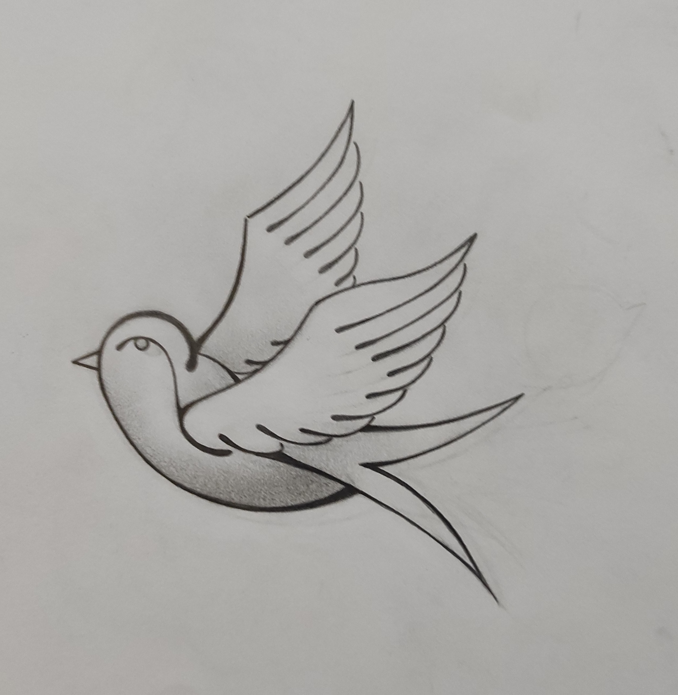

Galerie de Flashs de Tatouages
Catégorie : Flash de Tatouages
Cette galerie présente une sélection de mes créations de flashs, conçues pour être des motifs de tatouage uniques. Mes designs explorent différents styles, allant du old school (traditionnel), à la gravure, à l'ornementale, et globalement du blackwork.
Flashs Coup de Coeur

Autres Créations de flashs



Flashs dessinés sur Papier


 
